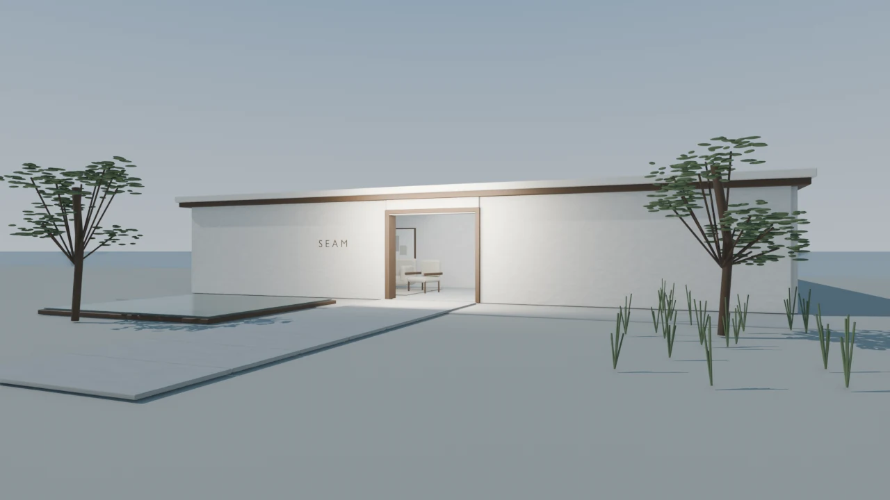

공간을 여는 중
01 / THE APPROACH
SEAM
바다 곁에 머무는 하루.
길을 따라, 천천히 안으로.
A FICTIONAL HOTEL / AURORA PORTFOLIO
이동 영상을 불러오지 못했습니다. 장면 사진으로 둘러보세요.
Between land & sea.

01 / THE APPROACH
바다 곁에 머무는 하루.
길을 따라, 천천히 안으로.
A FICTIONAL HOTEL / AURORA PORTFOLIO
이동 영상을 불러오지 못했습니다. 장면 사진으로 둘러보세요.